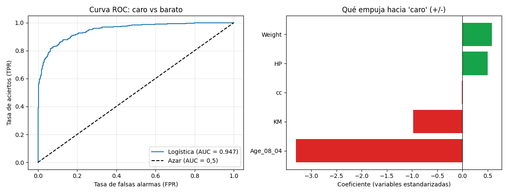

Unidad 8 · Clasificación · Lección 0034
Regresión logística y ROC: probabilidades en vez de votos
Win de hoy: k-NN vota; la regresión logística da probabilidades (AUC 0,947, accuracy 87,1 % con umbral 0,5) y el umbral se elige según qué error duele más.
1 · De «caro» a «72 % caro»
k-NN (lección 0033) dice «caro» o «barato» a secas.
La logística dice «72 % de chances de caro»: una probabilidad que después convertimos en etiqueta con un
umbral
(0,5 por convención). ¿Cómo? Una recta ponderada (β·Age + β·KM + …) pasa por la función
sigmoide,
que aplasta todo al rango 0–1. Mismo target que 0033 (Price > 9900), mismas 5 variables estandarizadas.
2 · ROC y AUC: el rendimiento en todos los umbrales a la vez
Cada umbral da una matriz de confusión distinta. La curva ROC resume todas: barre los umbrales y grafica aciertos (TPR) vs falsas alarmas (FPR). El AUC es el área bajo esa curva: 0,5 = azar, 1 = perfecto.

cc ≈ 0 no aporta nada.AUC 0,947 = excelente pero no mágico: el modelo ordena muy bien (casi siempre puntúa más alto a un caro que a un barato), aunque el accuracy con umbral 0,5 sea 87,1 %, empatado con k-NN. La logística no gana por puntería sino por explicabilidad: cada coeficiente dice cuánto empuja cada variable.
Regenerar la figura (mismo resultado versionado en assets/img/toyota/):
python scripts/make_figures.py --only regresion-logistica-roc3 · El umbral lo pone el negocio, no el default
Misma probabilidades, tres decisiones distintas (CV 5-fold):
| Umbral | Accuracy | Falsas alarmas (FP) | Caros perdidos (FN) | Cuándo usarlo |
|---|---|---|---|---|
| 0,3 (generoso) | 85,7 % | 152 | 53 | Si perder un caro duele (stock premium) |
| 0,5 (default) | 87,1 % | 78 | 107 | Si ambos errores duelen igual |
| 0,7 (estricto) | 85,9 % | 36 | 167 | Si etiquetar mal «caro» sale caro (garantías) |
Moraleja: el accuracy máximo (0,5) no siempre es la mejor decisión. La tabla de costos manda.
4 · Logística en 10 líneas (reproducí el AUC 0,947)
import pandas as pd
from sklearn.preprocessing import StandardScaler
from sklearn.linear_model import LogisticRegression
from sklearn.model_selection import cross_val_predict, StratifiedKFold
from sklearn.metrics import roc_auc_score
df = pd.read_csv("../ToyotaCorolla.csv")
cols = ["Age_08_04","KM","HP","cc","Weight"]
X = StandardScaler().fit_transform(df[cols])
y = (df["Price"] > 9900).astype(int)
cv = StratifiedKFold(5, shuffle=True, random_state=42)
proba = cross_val_predict(LogisticRegression(max_iter=2000), X, y, cv=cv,
method="predict_proba")[:,1]
print(round(roc_auc_score(y, proba), 4)) # 0.9473Tu turno: calculá el accuracy con umbrales 0,3 / 0,5 / 0,7 sobre proba
y verificá la tabla de arriba: ((proba >= t) == y).mean().
5 · Quiz (auto-chequeo inmediato)
6 · Fuente primaria y cierre
Para profundizar (1 fuente): James et al., An Introduction to Statistical Learning — cap. 4.3 y 5 (logística, ROC). Más contexto en RESOURCES.
Siguiente: 0035 · Naive Bayes y árboles: el clasificador ingenuo que funciona y las reglas sí/no que se dibujan.